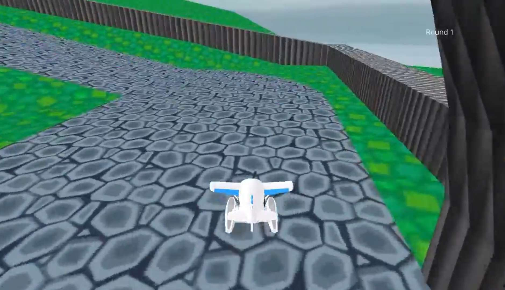

Pour la fin d'année de 1ere, nous avions l'autorisation de faire un projet libre pour le cours de NSI.
Au final, le projet n'aura jamais été donné à rendre et deviendra un projet personnel. J'ai souhaité
m'essayer à un point que je n'avais pas encore abordé : la programmation d'un jeu 3D en python.
N'ayant pas l'autorisation d'utiliser un moteur de jeu plus adapté comme Unity (que j'ai déjà eu
l'occasion d'utiliser) ou d'un autre langage que python, j'ai donc choisi d'utiliser le module
ursina engine, qui est un moteur de jeu 3D en python. Le moteur de jeu ne possédant pas
d'interface de developpement (IDE) à proprement parler, ce fut un réel défi de créer un jeu
uniquement à l'aide d'un éditeur de texte, à savoir Visual Studio Code. Ce module permet d'utiliser
des objets 3D, des textures et des sons. Pour la création des modèles 3D, j'ai utilisé le logiciel
Blender, qui est un logiciel de modélisation 3D open-source. Pour la création des textures, j'ai
utilisé le logiciel Photoshop ou utilisé des textures extraites de divers jeux nintendo, étant donné
que ce n'était qu'un projet personnel.

Une des premières images du projet
Pour rendre mon projet plus modulable, j'ai choisi de stocker chaque course dans un fichier séparé avec l'extension .race. En réalité, le fichier est une archive, contenant les modèles 3d, les textures, les sons et les informations de la course. Les informations de la course sont stockées dans un fichier json, qui est lu par le programme. Le fichier json contient diverses informations, telles que le nom de la course, le nombre de tours, l'emplacement des checkpoints, du départ, etc.. En réalité, cette façon de faire n'est pas du tout optimale et pourrait être améliorée si un jour je décide de refaire ce projet.
Les déplacements du joueur sont gérés par le module ursina engine. Pour cela, j'ai utilisé un système de vecteurs pour savoir la direction dans laquelle le joueur regarde et la direction dans laquelle il se déplace. Pour gérer les collisions, j'ai utilisé des raycasts, qui sont des rayons qui partent du joueur et qui vérifient s'il y a une collision avec un objet. Si c'est le cas, le joueur ne peut pas se déplacer dans cette direction. Il existe également des raycast qui vérifient si le joueur est au sol ou non. Si ce n'est pas le cas, la voiture descend. Il en existe également pour vérifier si l'utilisateur est passé par un checkpoint.
Ce projet aura été assez intéréssant pour une introduction au développement de jeux. Le fait de devoir tout faire à la main, sans IDE, a été assez compliqué. J'ai appris beaucoup de choses sur la programmation orientée objet, la gestion des collisions, la gestion des sons et des textures, etc.. En réalité, le fonctionnement du jeu a été assez inspiré du jeu Mario Kart 7, qui est un jeu dont j'ai eu l'occasion d'étudier le fonctionnement, notamment pour la création de mods. Cependant ce projet n'est pas terminé, je ne pense pas qu'il ira plus loin que ce stade de test. Essayer de reproduire le fonctionnement d'un jeu que j'apprécie aura été assez amusant pour moi, j'ai donc décidé de refaire des mécaniques plus originales pour d'autres projets.